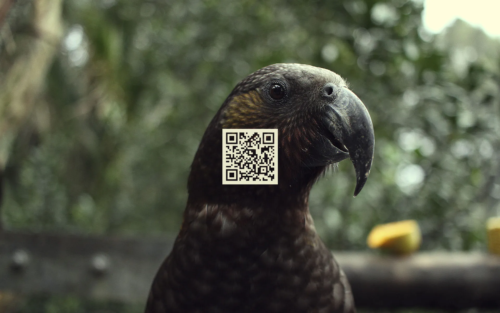
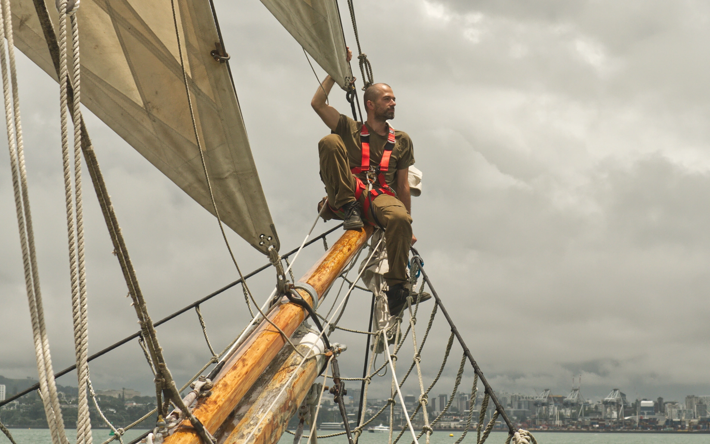

Meta
Support

I appreciate all the help I can get. If you want to support me on my creative journey, there's more than one way:
Financial
I'm happy to recieve grants, donations and all manner of moneytary help and even gear donations like computers, electronic components, photography equipment etc. All proceeds go towards maintaining life, funding gear, learning resources, service subscriptions that make my less financially viable activities possible.
Social
If you feel in any way inspired, you can help my content get afloat by subscribing to my social channels, liking my posts and sharing them with people you know who might also get inspired! The more people I can empower to make positive change in their life, the more people's lives they'll be able to affect positively as well. Linking me up with other creatives that might yield fruitful collaborations is also appreciated!
Emotional
I love hearing from friends I haven't met yet! If you appreciate what I do, I would appreciate hearing from you, where you may be on your journey and if my content has helped you in any way.
Freelancing
I'm constantly inspired by all the creative individuals and collectives out there. I'm always open to knowledge sharing and collaboration. If there's commercial work to be done together, don't hesitate to reach out and we can discuss how our path may run along for fun and profit.
Runningtap
Runningtap is my business entity through which I offer freelancing, consulting, R&D, prototyping and design services. If you're interested in me working with you, reach out via socials.
Cv
I'm a technologist, and a multi-disciplinary tech artist specializing in interactive applications and digital media.
Currently engaged in AI content creation pipelines, Stable Diffusion, ComfyUI workflow design and AI pipelines for generative content authoring. Talk to me if you want to learn more about AI and how you can leverage Open Source technologies at your business. I facilitate R&D, design, prototyping, development, user experience research, consulting and project management.
I have experience with with VR and mobile application development, 2D/3D art, animation, motion tracking, motion control, shader and graphics pipeline development and tooling.
On the hardware side I've worked with FDM prototyping and IoT hardware such as Raspberry Pi, arduino and ESP32 and UAV drone technology. I've done CAD and small run manufacturing using CNC machines, working with wood, metal and carbon fiber.
I'm interested working with early stage startups and companies that invest in R&D efforts to open new creative and business opportunities.
Zero King
Technical Artist
Aug 2023 - Dec 2023
Helped define early stage visual identity for the Zero King game. Authored environment art, shaders and interactive visual effects. Conducted R&D in the field of generative AI and it's applications in early stage game prototyping.
RemotelyHQ
Lead Technical Artist
Jul 2020 - Aug 2022
Was responsible for developing and optimizing the front-end of a virtual communication platform for the web. Using the Unity3D engine, we developed a voice-enabled virtual world for remote work and collaboration with customizable avatars. Responsible for environment and character creation pipelines.
JBA (SkillsVR)
Art Lead
Jan 2019 - Jul 2020
Managing a team of artists, we delivered 6 learning modules in Construction, Traffic Management, Prefabricated housing, Health & Safety, Confined Spaces and Working at Heights industries.
Dove deep into performance optimization for standalone VR, established art pipelines from git through to software and middleware workflow development, built and integrated 3D visuals and visual effects optimized for mobile, developed export pipelines and editor tooling for the art team.
Yoobee
Lecturer of Game Art & Development
Feb 2017 - Dec 2018
I Lead a re-development and NZQA compliance effort of the Game Art and Development diploma curriculum.
During the two years I taught a cohort of students the game development process from game design theory, playtesting methodologies, introduction to programming, 3D art and animation, rapid prototyping, basics of marketing and distribution.
Frogshark
Co-founder
Feb 2014 - Dec 2016
Co-founded an indie game studio in a team of 3.
Business responsibilities include marketing, PR & video production, community management & social media.
Production responsibilities include SFX design, music composition and 3D art.
Auckland University of technology
Lecturer
Feb 2016 - Jun 2016
Course leader for 3D Visualisation at AUT. Assisting students on their elective projects using Unity3D game engine to create interactive data visualizations.
Gameloft
3D Artist, Technical Artist
Sep 2010 - Feb 2014
Environment artist on Silent Ops mobile game,
VFX Artist on My Little Pony mobile game,
Technical Artist on Ice Age Adventures mobile game.
Weta Productions
VFX Artist
Dec 2009 - Apr 2010
Visual effects artist on documentary films "Supercontinents" and "Mutant Planet".
Education
Auckland University of technology
Master's Degree, Creative Technologies
2014 - 2016
Auckland University of technology
Bachelor's Degree, Digital Design
2006 - 2009
Legacy

Legacy is a wiki-like static site generator written in Python. Designed to convert a folder hierarchy with .txt files written in Markdown with custom metadata and custom link parsers to a cross-linked wiki html site.
Design philosophy:
- Source content is plain text, markdown formatted and readable outside of html renderer.
- Source folder structure reflects output page hierarchy.
- Plain static html, no databases or javascript required.
- Plain root output retains urls so that individual page relationships can change.
- Changes over time can be tracked using github commit tree
Nomand

nomand is my alias and the name I go by on various networks and communities online.
I was born in USSR, moved to Aotearoa (New Zealand), living a nomadic life aboard Irie. I'm a technologist and multimedia artist with projects spanning various disciplines and mediums. Monist, Cypherpunk Spiritual being. Work with me
Find how you can support me and my work here
Sitemap
The following is the sitemap by page hierarchy. Not every topic and page is exposed in the sidebar and as this site grows, things may move around and expand layers deep. Use this to help navigate my content.